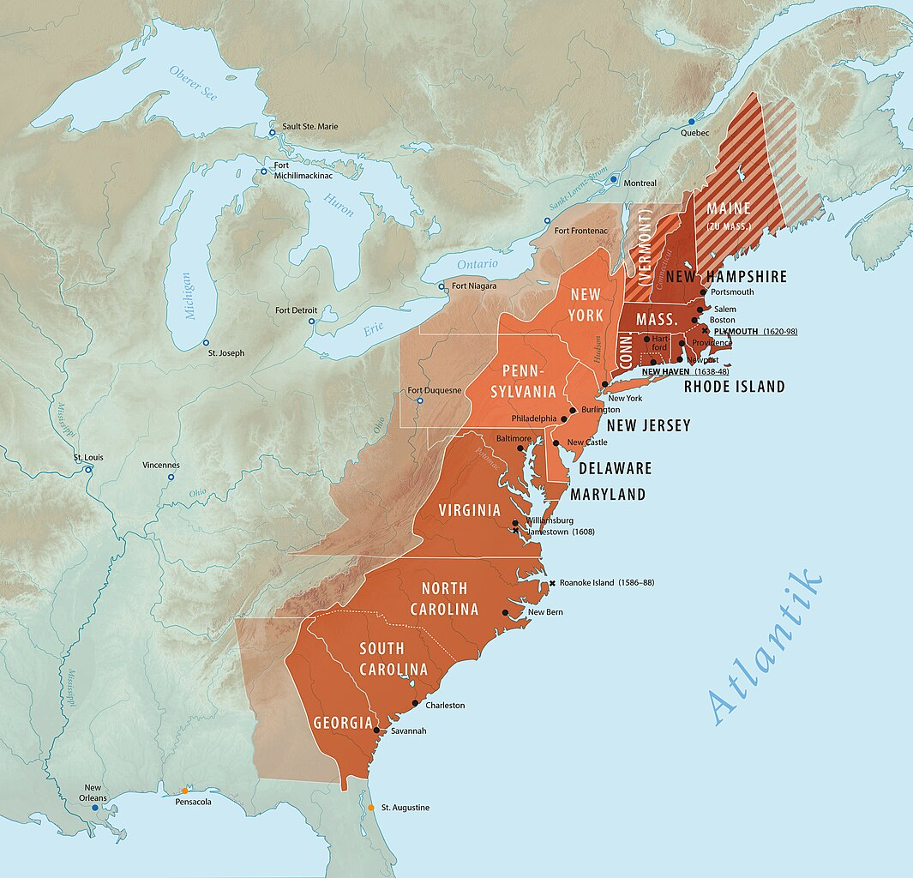
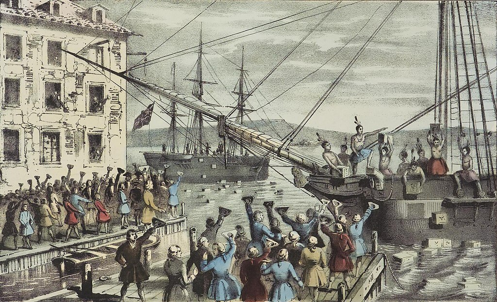

Aula 2
Aula 2CCLHM0081 · História da América Independente
Revolução Americana
Aula 2Acesse os slides da Aula 2
Abra a apresentação no celular e acompanhe no seu ritmo.
Aula 2Modelos de colonização
1. Colonia de Povoamento X Colonia de Exploração?
- Ibéricos x Anglos-Saxões
- Clima e geografia
- Origens do "atraso" ou "sucesso" das colônias
Aula 2Inglaterra e colonização
2. Inglaterra no século XVII
- Ausência de um projeto colonial sistemático
- Tensões entre a Coroa e o Parlamento, entre nobreza e burguesia
- Tensões religiosas
- Inflação, fome, peste
- Aumento da população
Aula 2Sociedade colonial
3. Colonos ingleses na América
- Companhias de comércio: empresas privadas e capitalistas
- Órfãos, mulheres pobres
- Servos por contrato (indentured servants)
- Peregrinos (pilgrims) e puritanos: perseguição religiosa
- Escravos africanos
- Crescimento populacional
Aula 2
Aula 2Organização regional
4. Diferenças regionais
Aula 2Diferenças regionais · Norte
4. Diferenças regionais
Norte
- Clima temperado
- Policultura
- Consumo interno
- Trabalho familiar
- produção de navios
- comércio triangular
- Pesca / Peles
Aula 2Diferenças regionais · Sul
4. Diferenças regionais
Sul
- Clima tropical
- Monocultura (tabaco, arroz, algodão)
- Escravidão
- Mercado externo
Aula 2Transformações econômicas e territoriais
5. Transformações do século XVIII
- Explosão demográfica + movimento populacional + busca por terras
- Governos coloniais perdem controle sobre novos assentamentos
- Grande pressão sobre as populações indígenas
- Maior demanda por grãos na Grã-Bretanha e por alimentos em geral no Caribe = aumenta produção, comércio, manufaturas, transporte e comunicações.
Aula 2Reorganização imperial
5. Transformações do século XVIII
- Reforma colonial com o final da Guerra dos Sete Anos (1763)
- Reorganização do território adquirido da França e Espanha
- Despesas: gastos, juros, exército, marinha
- Aumento de impostos
- Fim da 'salutar negligência' (salutary neglect)
Aula 2Resistência colonial
6. A resistência dos colonos
- Criação de uma série de leis e impostos que afetavam diretamente a economia das colônias
- Lei do Selo (1765): "ameaça à autonomia colonial"
- Reação: boicote, protestos, motins, violência, jornais, panfletos, clubes
- Filhos de liberdade
- Medidas da coroa pós-1765: tropas, novos tribunais, leis, repressão
Aula 2Boston e as leis coercitivas
6. A resistência dos colonos
- Boston Tea Party (1773): reação à Lei do Chá
- Leis coercitivas (1774): fechamento do porto de Boston, intervenção militar
Aula 2
Aula 2Representação e tributação
7. Debate imperial sobre política, representação e autonomia
- A “representação virtual” era defendida pelos britânicos: o Parlamento representaria todos os súditos do Império, mesmo sem representantes eleitos.
- Os colonos consideravam essa representação insuficiente.
- A imposição de impostos sem representação direta seria ilegítima: “no taxation without representation”.
Aula 2Direitos, liberdade e autonomia
7. Debate imperial sobre política, representação e autonomia
- Os britânicos consideravam as reformas e os impostos necessários para manter o Império.
- Os colonos viam essas medidas como um ataque a seus direitos e liberdades.
- As divergências ampliaram o distanciamento entre colônias e metrópole, dificultando a reconciliação e pavimentando o caminho para a independência.
Aula 2Crise da autoridade britânica
Criação de Governos Informais e o Congresso Continental
Governos Informais Substituindo o Controle Real
- Desintegração do Controle Britânico
- Comitês de Correspondência
Aula 2Organização política colonial
Criação de Governos Informais e o Congresso Continental
Formação do Congresso Continental da Filadélfia (1774)
- Primeiro Congresso Continental
- Declaração de Direitos e Agravos
- Organização do Boicote
Aula 2Participação política
Novo Tipo de Política Popular e Retórica da Liberdade
Emergência de uma Política Popular
- Ampliação da Participação Política
- Ascensão de Líderes Populares
Aula 2Retórica da liberdade
Novo Tipo de Política Popular e Retórica da Liberdade
Retórica da Liberdade
- Centralidade da Liberdade no Discurso Político
- Impacto da Retórica
Aula 2Ampliação da arena política
Novo Tipo de Política Popular e Retórica da Liberdade
Ampliação da Arena Política
- Inclusão de Novos Grupos
- Movimento de Resistência Unificado
Aula 2Segundo Congresso Continental
A Declaração de Independência
O Segundo Congresso Continental
- Contexto e Função
- Decisões Cruciais
Aula 2Conflito armado
A Declaração de Independência
Ações Militares em Boston
- Cerco de Boston
- Mobilização Popular
Aula 2Exército Continental
A Declaração de Independência
Criação do Exército Continental
- Estabelecimento do Exército
- Liderança de Washington
Aula 2Thomas Paine e Common Sense
A Declaração de Independência
Importância da Obra e Ação de Thomas Paine
- Publicação de "Common Sense"
- Impacto Intelectual e Político
Aula 2Independência · 1776
A Declaração de Independência
A Declaração de Independência de 1776
- Redação e Influências
- Questões de Escravidão
- Impacto Democrático
Aula 2 Aula 2
Aula 2Aula 3 · 27/08/2026
Próxima aula
Aula 3 — 27/08/2026
Tema: Formação da República dos EUA
Leitura obrigatória: VIANA, Larissa Moreira. “A América negra em tempo de revolução: raça e república nos Estados Unidos (1776–1860)”. Revista de História Comparada, v. 8, n. 2, 2014, p. 146–165.
Material de apoio: Questões de apoio à leitura — Viana (2014).